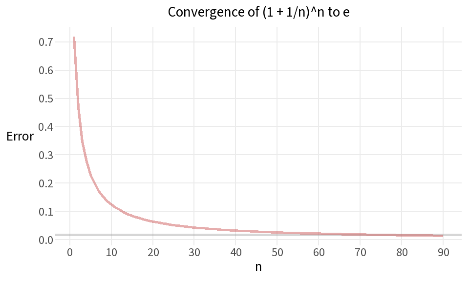
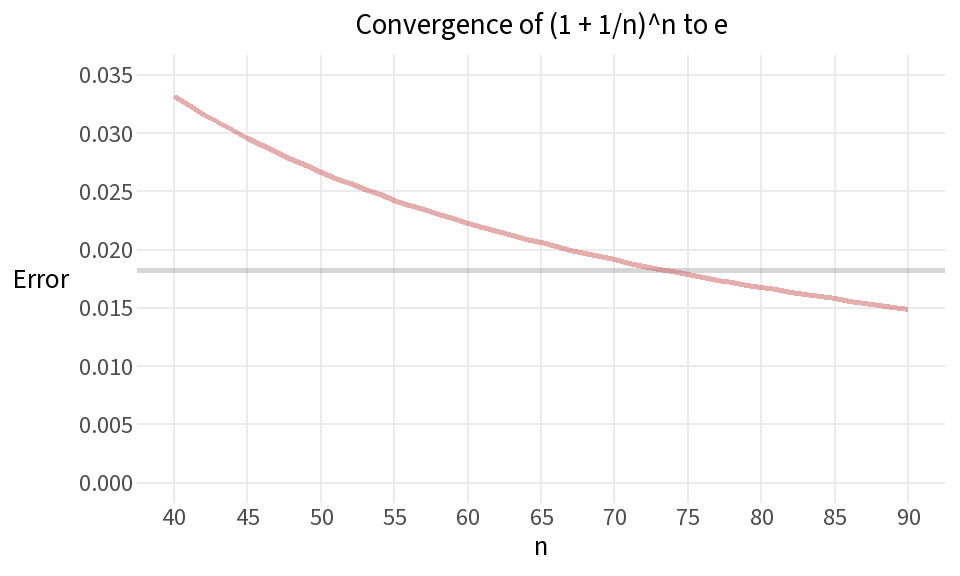
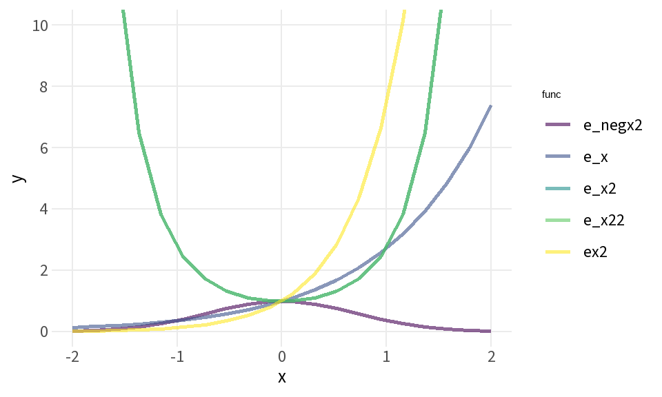
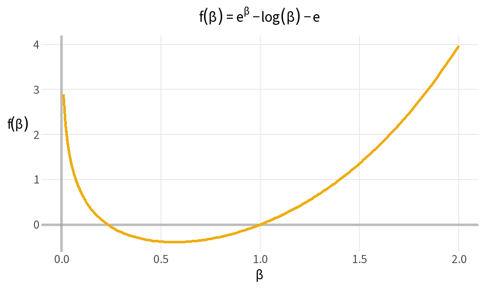
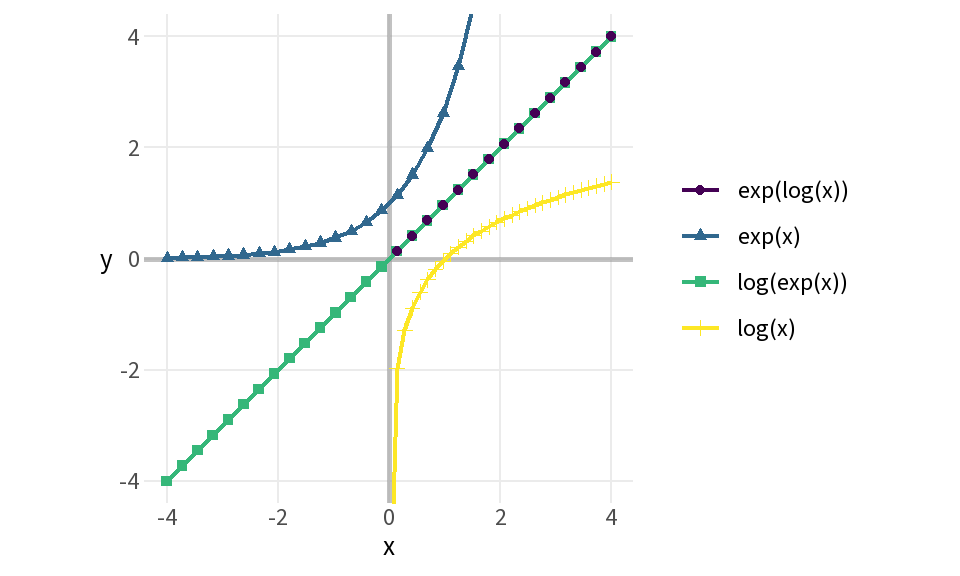

n <- 1:90
exp_est <- tibble(n,
e_est=NA,
e_diff=NA)
for (i in n) {
exp_est$e_est[i] <- (1 + 1/n[i])^n[i]
exp_est$e_diff[i] = exp(1) - exp_est$e_est[i]
}Calculus in R: Derivatives and Applications
Unit 3: Functions
Script 2: Exponential and Logarithmic Functions
Exercise 1: Estimate e
Where does e come from?
There are several ways to express / define e. Here’s the way to express it in terms of limits.
\[e=\lim_{n\to\infty}\left(1+\frac{1}{n}\right)^n\]
exp_est %>%
head(30) %>%
flextable()n | e_est | e_diff |
|---|---|---|
1 | 2.00 | 0.7183 |
2 | 2.25 | 0.4683 |
3 | 2.37 | 0.3479 |
4 | 2.44 | 0.2769 |
5 | 2.49 | 0.2300 |
6 | 2.52 | 0.1967 |
7 | 2.55 | 0.1718 |
8 | 2.57 | 0.1525 |
9 | 2.58 | 0.1371 |
10 | 2.59 | 0.1245 |
11 | 2.60 | 0.1141 |
12 | 2.61 | 0.1052 |
13 | 2.62 | 0.0977 |
14 | 2.63 | 0.0911 |
15 | 2.63 | 0.0854 |
16 | 2.64 | 0.0804 |
17 | 2.64 | 0.0759 |
18 | 2.65 | 0.0719 |
19 | 2.65 | 0.0682 |
20 | 2.65 | 0.0650 |
21 | 2.66 | 0.0620 |
22 | 2.66 | 0.0593 |
23 | 2.66 | 0.0568 |
24 | 2.66 | 0.0546 |
25 | 2.67 | 0.0524 |
26 | 2.67 | 0.0505 |
27 | 2.67 | 0.0487 |
28 | 2.67 | 0.0470 |
29 | 2.67 | 0.0454 |
30 | 2.67 | 0.0440 |
exp_est %>%
.[31:60,] %>%
flextable()n | e_est | e_diff |
|---|---|---|
31 | 2.68 | 0.0426 |
32 | 2.68 | 0.0413 |
33 | 2.68 | 0.0401 |
34 | 2.68 | 0.0389 |
35 | 2.68 | 0.0378 |
36 | 2.68 | 0.0368 |
37 | 2.68 | 0.0358 |
38 | 2.68 | 0.0349 |
39 | 2.68 | 0.0341 |
40 | 2.69 | 0.0332 |
41 | 2.69 | 0.0324 |
42 | 2.69 | 0.0317 |
43 | 2.69 | 0.0309 |
44 | 2.69 | 0.0303 |
45 | 2.69 | 0.0296 |
46 | 2.69 | 0.0290 |
47 | 2.69 | 0.0284 |
48 | 2.69 | 0.0278 |
49 | 2.69 | 0.0272 |
50 | 2.69 | 0.0267 |
51 | 2.69 | 0.0262 |
52 | 2.69 | 0.0257 |
53 | 2.69 | 0.0252 |
54 | 2.69 | 0.0247 |
55 | 2.69 | 0.0243 |
56 | 2.69 | 0.0239 |
57 | 2.69 | 0.0235 |
58 | 2.70 | 0.0231 |
59 | 2.70 | 0.0227 |
60 | 2.70 | 0.0223 |
exp_est %>%
tail(30) %>%
flextable()n | e_est | e_diff |
|---|---|---|
61 | 2.7 | 0.0220 |
62 | 2.7 | 0.0216 |
63 | 2.7 | 0.0213 |
64 | 2.7 | 0.0209 |
65 | 2.7 | 0.0206 |
66 | 2.7 | 0.0203 |
67 | 2.7 | 0.0200 |
68 | 2.7 | 0.0197 |
69 | 2.7 | 0.0194 |
70 | 2.7 | 0.0192 |
71 | 2.7 | 0.0189 |
72 | 2.7 | 0.0186 |
73 | 2.7 | 0.0184 |
74 | 2.7 | 0.0181 |
75 | 2.7 | 0.0179 |
76 | 2.7 | 0.0177 |
77 | 2.7 | 0.0174 |
78 | 2.7 | 0.0172 |
79 | 2.7 | 0.0170 |
80 | 2.7 | 0.0168 |
81 | 2.7 | 0.0166 |
82 | 2.7 | 0.0164 |
83 | 2.7 | 0.0162 |
84 | 2.7 | 0.0160 |
85 | 2.7 | 0.0158 |
86 | 2.7 | 0.0156 |
87 | 2.7 | 0.0155 |
88 | 2.7 | 0.0153 |
89 | 2.7 | 0.0151 |
90 | 2.7 | 0.0149 |
The value of n must get into the hundreds before the estimate will converge to 2.72
Exercise 2: Visualize e’s convergence
Plot the convergence of the estimate to e
ggplot(exp_est, aes(n, e_diff)) +
geom_hline(yintercept=.0183,
color="grey60",
alpha=.4,
size=1) +
geom_line(color="indianred",
size=1,
alpha=.5) +
scale_x_continuous(breaks=seq(0,90, 10)) +
scale_y_continuous(breaks=seq(0,.8,.1)) +
labs(x = "n",
y = "Error",
title = "Convergence of (1 + 1/n)^n to e") +
theme(axis.title.y=element_text(angle=0,
vjust=.5))
At what point does the sequence converge? Let’s say reaching 2.7 is close enough to be considered as reaching 2.718
ggplot(filter(exp_est, n>39), aes(n, e_diff)) +
geom_hline(yintercept=.0183,
color="grey60",
alpha=.4,
size=1) +
geom_line(color="indianred",
size=1,
alpha=.5) +
coord_cartesian(ylim=c(0,.035), xlim=c(40,90)) +
scale_x_continuous(breaks=seq(40,90, 5)) +
scale_y_continuous(breaks=seq(0,.05,.005)) +
labs(x = "n",
y = "Error",
title = "Convergence of (1 + 1/n)^n to e") +
theme(axis.title.y=element_text(angle=0,
vjust=.5))
The estimate reaches 2.7 at about \(n=73\). The value of \(n\) needs to be 164 to reach 2.71, and 4,822 to reach 2.718
Exercise 3: Exploring e in R
Plot a family of exponential functions
x <- seq(-2,2, length.out = 20)
e_x <- exp(x)
e_x2 <- exp(x^2)
e_x22 <- exp((-x)^2)
e_negx2 <- exp(-(x^2))
ex2 <- exp(x)^2
func_key <- tibble(func_code = 1:5,
func=c("e_x","e_x2","e_x22","e_negx2","ex2"),
`function` = c("$e^x$",
"$e^{x^2}$",
"$e(-x)^2$",
"$e^{-(x^2)}$",
"$(e^x)^2$"))
#func_key
d <- tibble(x, e_x, e_x2, e_x22, e_negx2, ex2)
dL <- d %>%
pivot_longer(-x,
names_to="func",
values_to="y") %>%
left_join(func_key, by = "func")
dL %>%
head() %>%
kable(escape=T)| x | func | y | func_code | function |
|---|---|---|---|---|
| -2.00 | e_x | 0.135 | 1 | \(e^x\) |
| -2.00 | e_x2 | 54.598 | 2 | \(e^{x^2}\) |
| -2.00 | e_x22 | 54.598 | 3 | \(e(-x)^2\) |
| -2.00 | e_negx2 | 0.018 | 4 | \(e^{-(x^2)}\) |
| -2.00 | ex2 | 0.018 | 5 | \((e^x)^2\) |
| -1.79 | e_x | 0.167 | 1 | \(e^x\) |
ggplot(dL, aes(x, y, color = func)) +
geom_line(size=1,
alpha=.6) +
coord_cartesian(xlim = c(-2,2), ylim = c(0,10)) +
scale_y_continuous(breaks=seq(0,10,2))
Exercise 4: Exploring e in R (symbolic-style expression)
In Python, SymPy plotted exp(beta) - log(beta) - e symbolically. In R we evaluate and plot the same function directly over a numeric grid.
beta <- seq(0.01, 2, length.out = 200) # avoid log(0)
y <- exp(beta) - log(beta) - exp(1)
ggplot(data.frame(beta = beta, y = y), aes(beta, y)) +
geom_hline(yintercept = 0,
size=1,
color="grey60",
alpha=.6) +
geom_vline(xintercept = 0,
size=1,
color="grey60",
alpha=.6) +
geom_line(linewidth = 1,
color="darkgoldenrod2") +
labs(x = expression(beta),
y = expression(f(beta)),
title = expression(f(beta) == e^beta - log(beta) - e)) +
theme(axis.title.y=element_text(angle=0,
vjust=.6))
Exercise 5: Exp and log as mutual inverses
x_log <- seq(0.001, 4, length.out = 30)
x_exp <- seq(-4, 4, length.out = 30)
df <- rbind(
data.frame(x = x_log, y = log(x_log), fun = "log(x)"),
data.frame(x = x_exp, y = exp(x_exp), fun = "exp(x)"),
data.frame(x = x_exp, y = log(exp(x_exp)), fun = "log(exp(x))"),
data.frame(x = x_exp, y = exp(log(x_exp)), fun = "exp(log(x))")
)
ggplot(df, aes(x = x, y = y, color = fun, shape = fun)) +
geom_hline(yintercept = 0,
size=1,
color="grey60",
alpha=.6) +
geom_vline(xintercept = 0,
size=1,
color="grey60",
alpha=.6) +
geom_line(size=.8) +
geom_point(size = 1.5) +
coord_fixed(xlim = c(-4, 4), ylim = c(-4, 4)) +
labs(x = "x", y = "y", color = NULL, shape = NULL) +
theme(axis.title.y=element_text(angle=0,
vjust=.5))